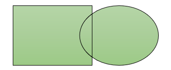

插入
Insert
表格
- 表格的使用
- 同Word
图像
- 图片的使用：调整、裁剪
- 个人感觉在线拉取图片速度比较慢
- 设计签名
- 调整对比度、设置透明色
- 工具推荐：背景去除
插图
- 形状
- 编辑顶点 Edit Shape
- 矢量运算 Merge Shapes：可以对2个或2个以上的元素做任何编辑，达到设计的效果
- 强烈推荐好好掌握！！！
- 根据先选择的元素为参考对象进行矢量运算
-
矢量运算 - [说明]以下示例都是先选择绿色矩形再选择黄色椭圆
-
原始状态 -
结合 Union -
组合 Combine -
 拆分 Fragment -

相交 Intersect -
剪除 Subtract - 图标
- 修饰使用
- 个人感觉拉取速度比较慢
链接
- 缩放定位
- 新版本功能
- 利用丝滑的缩放效果实现到节、到幻灯片的跳转
- 指定元素创建缩放定位后，会创建一个新的元素，默认是目标幻灯片的缩略图；且跳转过去后，不返回，从当前开始继续顺序播放
- 在缩放的动态选项卡中，可以修改为喜欢的图片，还可以指定返回
- 链接
- 文档内部和外部的链接，同Word
- 不同的是，Word中的书签可以指定任何位置、任何元素；PPT的书签不能单独创建，而是指的已经创建好的某一张幻灯片
- 屏幕提示：设置提示信息；当幻灯片播放时，鼠标悬停在幻灯片上给出超链接信息
-
书签 - 动作
- 根据鼠标动作触发幻灯片的行为
- 通常是打开外部应用程序，如播放媒体、查阅外部资料等
- 鼠标单击、鼠标悬停两种触发方式
-
动作
文本
- 文本框
- 横排文本框、竖排文本框
-
Tips如果使用了特定字体，请在"文件" → "更多" → "选项" → "保存"，将字体嵌入文件
- 页眉页脚、日期、幻灯片编号
- 这三个使用同一个对话框设置
- 可以只在当前幻灯片插入，也可以应用到所有幻灯片
-
页眉页脚、日期、幻灯片编号 - 艺术字
- 同Word
- 对象
媒体
- 视频
- 音频
- 录制屏幕
- 微课比赛、录制VIP课程
- 仅仅是录制屏幕，不能录制其中的使用；录制声音请使用"录制" → "录制"